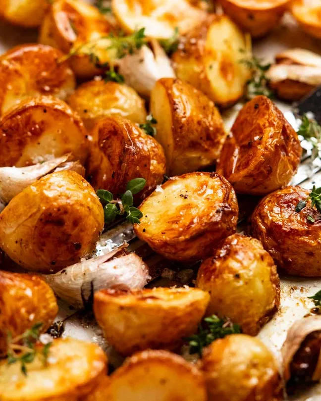

Roasted Potatoes

Description
Roasted potatoes is a popular and delicious christmas dish.This following recipe is so good that your family will be demanding more.
Ingredients
- Potatoes
- Garlic
- Thyme or rosemary sprigs
- Olive oil
Steps
- Toss potatoes in olive oil, salt and pepper. I just do this on the tray, because why create more washing up? Then toss through garlic and thyme.
- Roast for 30 minutes at 200°C / 400°F (180°C fan-forced).
- Toss – Remove from oven, then toss. If any are stuck, leave them. They will release when ready!
- Roast for a further 25 to 35 minutes. Toss again then pile onto serving plate and serve!
Please note that this recipe is taking from Recipetineats. It was used to complete the Odin Project assignment